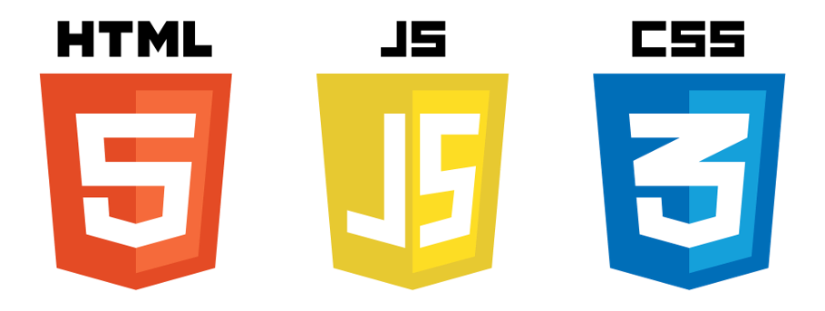
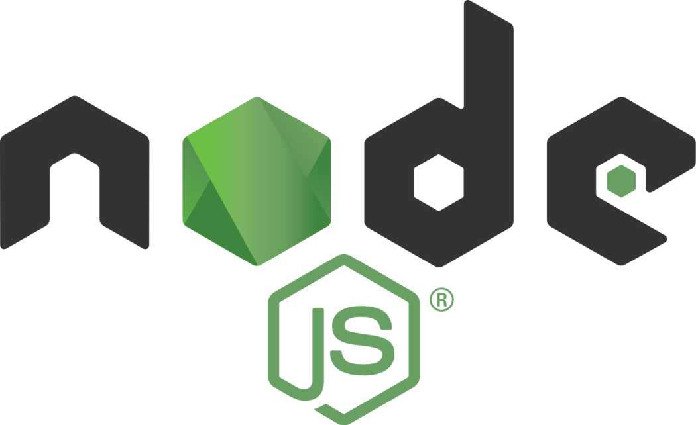
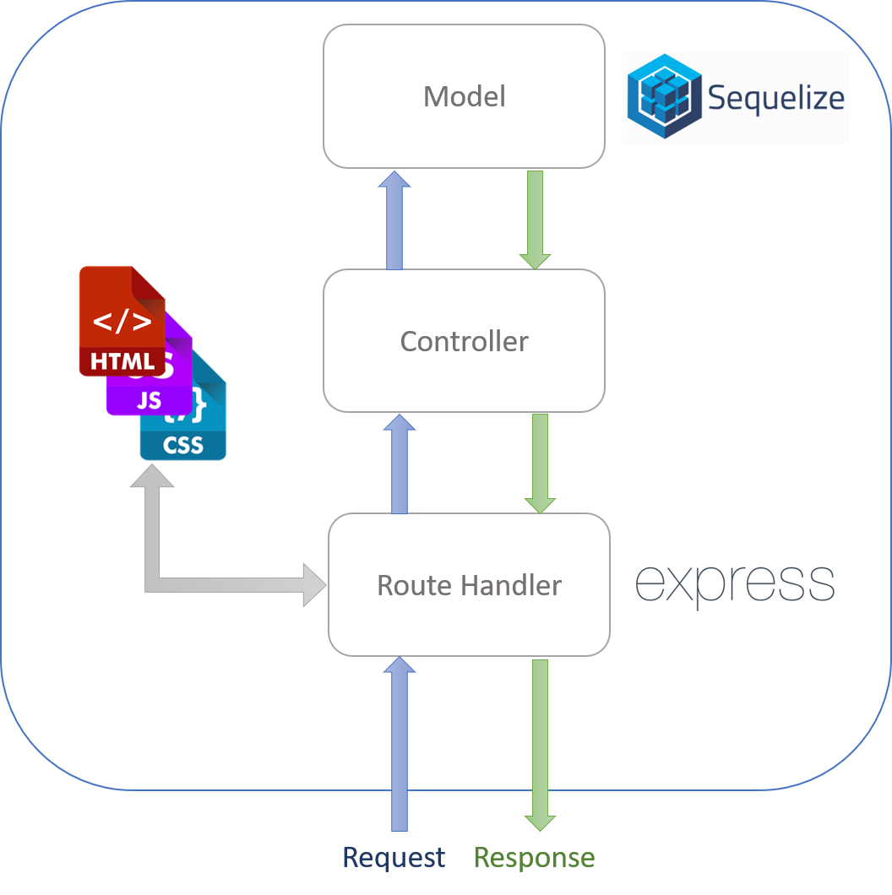
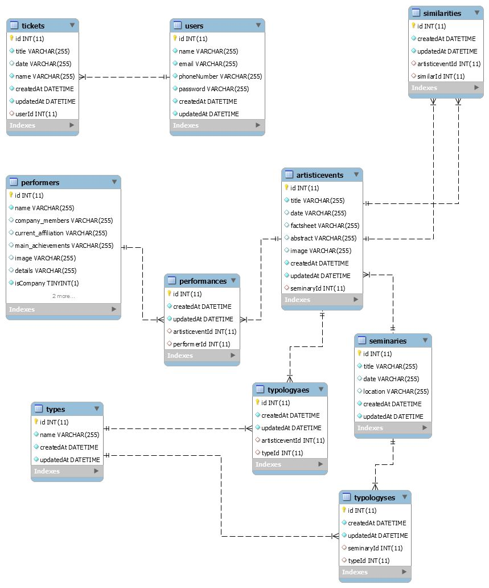

Documentation of the Backend part
Deliverable D1
General group information
Links to other deliverables
- Deliverable D0: the web application is accessible at this address.
- Deliverable D2: the YAML file containing the specification of the app API can be found at this address.
- Deliverable D3: the SwaggerUI page of the same API is available at this address.
- Deliverable D4: the source code of D0 is available as a zip file at this address.
- Deliverable D5: the address of the online source control repository is available this address. We hereby declare that this is a private repository and, upon request, we will give access to the instructors.
Specification
Web Architecture
Describe here, with a diagram, the components of your web application and how 3 they interact. Highlight which parts belong to the application layer, data layer or presentation layer. How did you ensure that HTML is not rendered server side?
DreamLand Festival Web Application follows the common Client-Server pattern. The Client is represented by the user's web browser, and for that the frontend part of the application is written with HTML, CSS/(Bootstrap),and JavaScript. In this way, the most common browsers can handle and render properly the
frontend of this application.

Focusing on the Server, it is developed using the famous Node.js framework and it is deployed on
a Heroku machine.

The Server is divided into 4 main component, which are in charge of fulfilling a specific function:

As you can notice from the diagram above, the four parts are the model, the controller, the route
handler and a static part, used to serve the HTML, CSS or JavaScript files.
API
REST compliance
Describe here to what extent did you follow REST principles and what are the reasons for which you might have decided to diverge. Note, you must not describe the whole API here, just the design decisions.
- REST - Uniform Interface: This simplifies the architecture, as all components follow the same rules to speak to one another. It also makes it easier to understand the interactions between the different components of the system.
- REST - Client-Server: the client and the server both have a different set of concerns. The server stores and manipulates information and makes it available to the user. The client takes that information and displays it to the user. This separation of concerns allows both the client and the server to evolve independently.
- REST - Stateless: We decided to manage the session state on server side. In this way each time the user asks for a private resource (e.g. his tickets) the server checks if the user is currently authenticated in the system. It means that if access to a resource requires authentication, then the client needs to authenticate itself before asks for determined resource.
- REST - Cacheable: We decided not to cache any information, both in client and server side.
- REST - Layered System: We decided not to develop a layered system in order to make the communication more straightforward.
OpenAPI Resource models
Here we describe synthetically the basic models introduced for resources. In addition to these basic models, there are also complex models which derive from the simple ones. Each resource is provided in json format with all the details of the resource.
- Type: Describes type of an Artistic Event or a Seminary (such as Music, Dance or Theatre)
- User: Model of an User inside the application
- Ticket: Model of a Ticket reservation of the user
- ArtisticEvent: Object used to describe an Artistic Event
- Performer: Object used to describe a Performer
- Performance: Object used to associate an Artistic Event to its Performers
- Seminary: Object used to describe a Seminary
- Typologyse: Object used to associate a Seminary to its Type (such as Music, Dance or Theatre)
- Typologyae: Object used to associate an Artisti Event to its Type (such as Music, Dance or Theatre)
Data model
Describe with an ER diagram the model used in the data layer of your web application. How these map to the OpenAPI data model?

Each database entity is mapped with specific HTTP requests. In order to retrive specific data from the database, different APIs corresponds to specific query. For instance if we want to retrieve all the information of a single artistic event, the request GET /artisticevent/artisticevent/{artisticeventId} is mapped with a specific query which returns all the artistic event information and its performers making the right joins between tables. For almost all the table a GET request is provided. Instead, about reservation services, to perform any request and query on the tickets table, an user must be authenticated. Each authenticated user can manipulate just his own entries in the tickets table. In the same way, the GET /auth/me request retrieves data only of the current authenticated user.
Implementation
Tools used
Describe here which tools, languages and frameworks did you use for the backend of the application.
The back end part of the project is entirely made in NodeJS, exploiting several libraries to accomplish different tasks such as: initialize the web server, handle and routes HTTP requests, manage OpenAPI, authentication.
- Tools
- Visual Studio Code
- All the code has been written from this editor.
- NodeJS
- It is the base of our server.
- Swagger Tools
- It is important in the checking of the API.
- Postman
- It is important in the checking of the API.
- Languagues
- Javascript
- It is used in the server (NODE) and for the Presentation Layer.
- OpenAPI
- It is used for specifying the API.
- Frameworks
- Swagger
- It models in an easy way the API and connects the differents functions.
- Express
- It is the web application framework we used to create the server.
- Sequelize
- It is a powerful library in Javascript that makes it easy to manage a SQL database.
- JWT
- Json Web Token is used to manage authentication.
Discussion
Describe here:
- How did you make sure your web application adheres to the provided OpenAPI specification?
The web application has been developed following the OpenAPI specification previously defined using the swagger.io editor. Each possible request are well defined in the .yaml file at the following link /backend/spec. When we implemented the specification we checked the results with the swagger’s tools, checking that results were equivalent to what we expected.
- Why do you think your web application adheres to common practices to partition the web application (static assets vs. application data)
We developed the main pages dynamically retriving data usign GET requests. The application data is provided dynamically by the server, so it has more complex and is where we focus in the backend. The static assets are the elements that doesn’t change from the point of view of the server: all the other parts, such as the layout, the images and texts of side pages are static and included in a separate folder.
- Describe synthetically why and how did you manage session state, what are the state change triggering actions (e.g., POST to login etc..).
In our application we use Bearer Authentication in order to manage session state:
- Endpoint: /auth/login - user sends email and password.
- If the data matches with the database, a JWT-based token is created. This token is associated to the authenticated user.
- Before any request that requires authentication (e.g. create an event ticket in the database), the middleware isAuth.js uses the authentication token in order to associate the authenticated user to the request.
- The authenticated user can now performs his own actions.
- Which technology did you use (relational or a no-SQL database) for managing the data model?
We decided to use a relational DBMS - mySQL - which is based on SQL.
Other information
Task assignment
Describe here how development tasks have been subdivided among members of the group:
- Alessandro worked on Back end (80%) and OpenAPI Spec (100% of the time), Front End (10% of the time).
- Fatima worked on Back end (20%), design (100% of the time), Front End (30% of the time).
- Arash worked on Front End (70% of the time).
Analysis of existing API
Describe here if you have found relevant APIs that have inspired the OpenAPI specification and why (at least two).
The APIs of the application were developed without too much influence from existing ones. We only found very useful the project provided during the lectures by Professor Zaccaria, open source on github at the following link: https://github.com/vzaccaria/nodejs-server-server. First, we have decided to test our endpoints by using Postman UI and then automatically generate the openAPI documentation by using the Postman export files. Finally, to implement the security and the authentication of the DreamLandFestival application, we have followed some guides available on the swagger.io online documentation.
Learning outcome
What was the most important thing all the members have learned while developing this part of the project, what questions remained unanswered, how you will use what you've learned in your everyday life?
- Alessandro learned how to set up a webserver exploiting NodeJs libraries, how to set up openAPI using Swagger, how to manage the authentication and how to deploy the web application on a cloud platform such as Heroku. Now, he has the basis for being a full stack developer and creating his own web applications.
- Fatima learned how to build a client-side render web page, how to interact with the realized webserver, how to retrieve data from a SQL database and how to design a responsive front end using CSS and Bootstrap.
- Arash learned how to build a client-side render web page and how to design a responsive front end using CSS and Bootstrap.